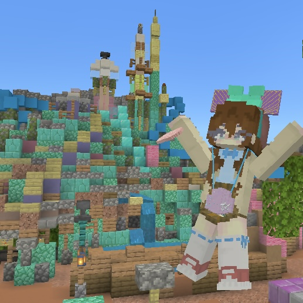

9月から「Imagination Server」のメンバーになりました！
けいたんにプログラミングを教わってます！
「Imagination Server」では「広報」と「イマベーター」所属。
マイクラ歴は半年行くか行かないかぐらいの初心者です…
趣味は「音楽」と「ファッション」メイクとかも好きです！
音楽は特にジャズが好きで、進路もそっち系です。
最近「ショッピング」「プログラミング」あたりも楽しむようになりました。
あとは、バイトとかも結構好きです！接客業は特にやりがいを感じます。
大学生活中一回はディズニーでバイトしたいなって思ってます！
まずは音楽関係ですね！いつか本場で演奏するのが夢です！
まだ分かんないけど、ディズニーや客船のラウンジとかでも演奏してみたいです！
「Minovation」は私が力を入れてることの一つです！
これからは率先してもっと積極的に取り組めたらいいなって思ってます！
鍵垢です→Instagram
誰でもどうぞ！→Twitter